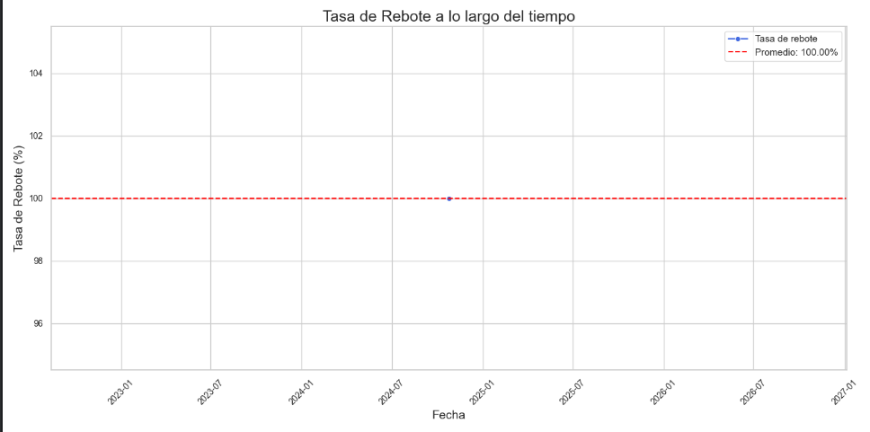

¿Qué es este Dashboard?
Este panel está diseñado para ayudarte a visualizar y analizar las métricas más relevantes de tu presencia en línea, con énfasis en redes sociales y tráfico web.
Incluye indicadores clave de rendimiento (KPIs), como tasa de rebote, tiempo promedio en sitio y tasa de conversión.
Objetivos Estratégicos (SMART)
- Aumentar el tiempo promedio en el sitio a 2 minutos
- Reducir la tasa de rebote al 14.4%
- Alcanzar una tasa de conversión del 5%
Gráfica: Tasa de Rebote por Fecha
Esta gráfica muestra la evolución de la tasa de rebote a lo largo del tiempo, permitiendo evaluar el impacto de las estrategias implementadas.

Análisis y Recomendaciones
Actualmente, la tasa de rebote está en 16%. Aunque es un buen resultado, se sugiere optimizar las páginas con mayor abandono y mejorar títulos/meta descripciones para acercarse al objetivo del 14.4%.